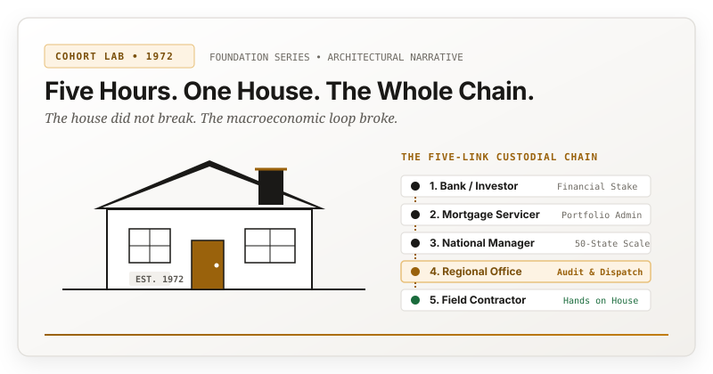

Five Hours. One House. The Whole Chain.
The house did not break. The macroeconomic loop broke.
In 1972, during the peak year of American total residential housing construction, a split-level suburban house was framed with Douglas fir and brick. For four decades, through interest rate shocks, energy crises, and refinancing waves, she sheltered families and marked milestones.
Decades later, when the macroeconomic mortgage loop snapped and the monthly payments stopped, she did not disappear into thin air. She stood silent on a residential street.
An empty-looking house is not an abandoned file. Between that front porch and the institutional lender holding the note lies an invisible five-link custodial chain: banks, servicers, national coordinators, regional operations desks, and field crews.
In this intensive 300-minute curriculum, trainees follow this single 1972 home through her entire custodial lifecycle—from mortgage default and perimeter security to forensic evidence audits and contractor reconciliation. You will never look at an empty house the same way again.

This five-hour program delivers industry literacy and audited classroom decision skills. It does not confer autonomous field authority or legal certification. Three distinct statuses exist and are never blended: Attended (completed class), Demonstrated in Class (passed the capstone defense), and Operationally Authorised (granted solely through employer onboarding and live client credentials).